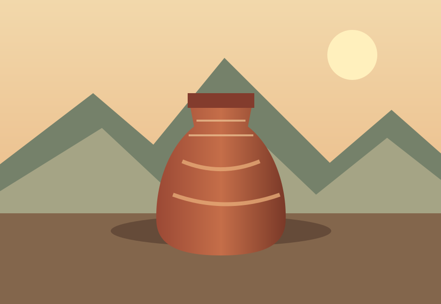
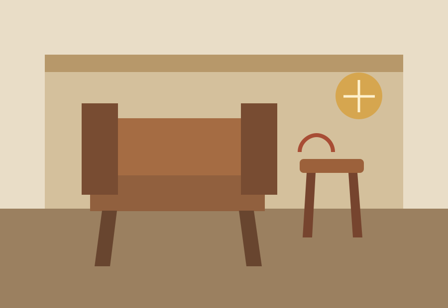

Taller Andino Sur · Arequipa
Una visita al taller
Mira de cerca las texturas, escucha el ambiente del taller y conoce algunos pasos de nuestro trabajo.



Sonidos del taller
Una breve ambientación sonora para acompañar la visita.
Un momento de trabajo
Secuencia audiovisual breve creada para esta muestra del taller.
El video es una pieza visual de muestra; las ilustraciones de la galería son recursos vectoriales locales.